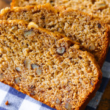
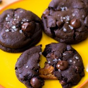
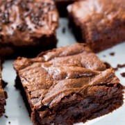
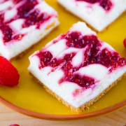
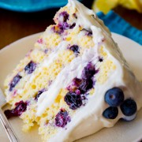

Having the right tool sis essential to successful baking. With the proper equipment on-hand, you will have better results and be encouraged to bake more often. There are a variety of tools taht are indispensable:
Kitchen Aid Mixer, Rimmed Baking Sheet, Wire Rack, Cake Pans, Rolling Pin, Parchment Paper, Nonstic Baking Mat, Mixing Bowls, Measuring Cups and Spoons, Kitchen Timer, Whisk, Rubber Spatula, Bench Scraper, Pastry Brushes, and Pastry Bags & Tips
The things that you can make and create are virtually infinite. You can make things from cookies and cupcakes, to pies and big cakes. Here are some pictures of things that you are able to make:
    